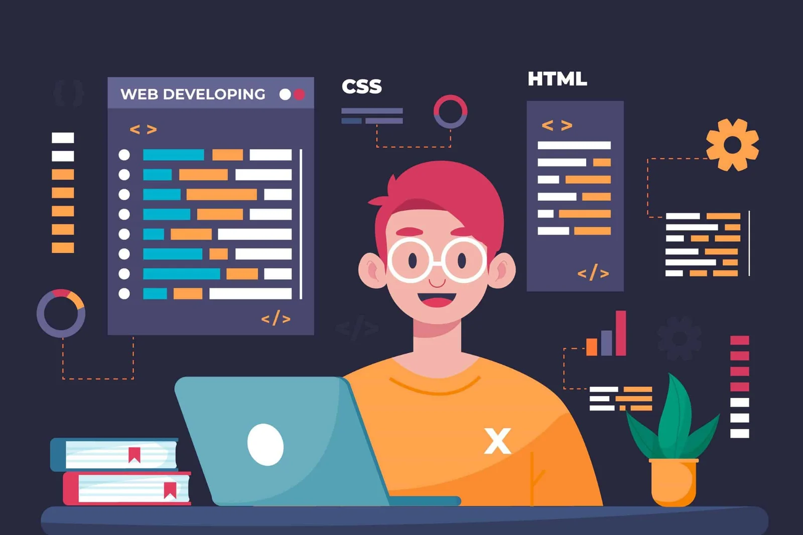

Disciplinas
A matriz curricular equilibra a teoria essencial da computação com a prática voltada para a construção de soluções reais. Aqui está algumas disciplinas:
Linguagem de Programação
Esta é a base onde a lógica pura se transforma em instruções que o computador executa. O estudo frequentemente começa com linguagens estruturadas, como C, para forjar uma compreensão profunda e "baixo nível" de como a máquina opera.
Desenvolvimento Web

Focada na construção de aplicações que rodam em navegadores, dividindo-se essencialmente em Front-end (a interface) e Back-end (o servidor). O aprendizado geralmente se inicia com a estruturação semântica em HTML e avança para linguagens e frameworks dinâmicos.
Banco de Dados

Nenhum sistema funcional sobrevive sem armazenar e organizar informações. Esta disciplina ensina a modelar dados (criar a estrutura de tabelas e relacionamentos) e a utilizar linguagens de consulta, como o SQL
Segurança da Informação
Ensina a proteger aplicações, redes e informações dos usuários contra vulnerabilidades e ataques. O estudo gira em torno dos pilares de Confidencialidade, Integridade e Disponibilidade. Na prática, envolve desde entender como dados são criptografados até prevenir falhas de injeção de código.